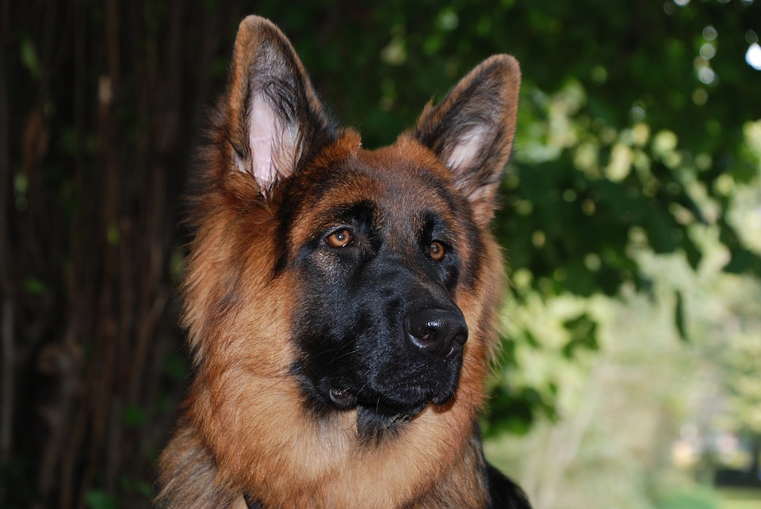
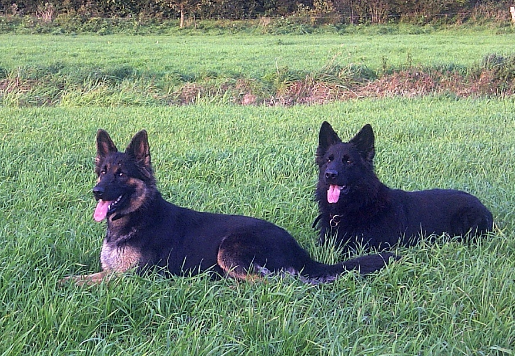

Dans cette rubrique, je vais vous faire part du standard de l'Altdeutsche Schäferhunde fixé par l'UCFAS (ou "Union Cynophile Française Altdeutsche Schäferhund" )
C’est un chien de taille moyenne, avec une longueur de tronc plus longue que sa hauteur au garrot (environ 20%). Son apparence est bien charpentée et musclée, sans lourdeur, ce qui lui donne un aspect équilibré et des mouvements fluides. L’Altdeutscher Schäferhund a un poil long et fourni. C’est un chien au tempérament stable, de nature confiant, attentif et dévoué. Il ne devra en aucun cas être agressif ou peureux.
La différence de type entre mâle et femelle doit être marquée.
La longueur total de la tête doit représenter 40% de la longueur du tronc, celle ci ne devra être ni trop lourde ni trop fine.
Le front est légèrement bombé, sans ou avec un sillon médio-frontal faiblement marqué.
La longueur du crâne doit représenter 50% de celle de la tête et doit être à peut près égale à sa largeur.
Pour le mâle cette largeur doit être supérieure.
Les lèvres doivent être noires, bien tendues et jointives.
La mâchoire doit être forte et articulée en ciseaux, la dentition complète et de 42 dents, dont 20 maxillaires supérieures et 22 maxillaires inférieures.
Le prognathisme inférieur ou supérieur est un défaut éliminatoire.
Les yeux sont de taille moyenne, en amande, non proéminents. Ils sont aussi sombres que possible, plus ou moins nuancés en fonction de la robe. Les yeux clairs sont indésirables.
Les paupières ne doivent pas pendre vers le bas (ectropion) ou être inversée vers le haut (entropion). C’est un défaut éliminatoire.
Les oreilles doivent être dressées, de taille moyenne. Elles doivent être légèrement plus hautes que la largeur à la base, symétriques. Le pavillon doit être orienté à l’avant. Une ou les deux oreilles tombantes est un défaut grave
Le cou doit être fort et musclé, plus ou moins relevé en fonction de l’attitude du chien.
Le dos doit être droit et horizontal. Une très légère inclinaison est tolérée. Un dos ensellé, voussé ou présentant une trop forte inclinaison est un défaut éliminatoire.
La poitrine ne doit être ni trop large ni trop basse, sa profondeur doit être très légèrement inférieure à la hauteur du garrot.
Afin de permettre un bon mouvement des coudes, les côtes ne doivent pas être en forme de tonneau, ni trop plates.
Au repos elle est portée tombante, avec une légère courbe sans crochet, elle se relève en action et peut légèrement dépasser la ligne de dos.
Sont considérés comme des défauts éliminatoires, la queue enroulée sur la ligne de dos ou l’absence de queue.
Défauts graves : la queue déviée, trop courte ou en crochet.
L’épaule est longue et inclinée. Les coudes ne doivent pas être décollés ni trop serrés. Les avant bras sont droits. Les pieds sont ronds et les ongles sont noirs.
Les membres postérieurs sont puissants et musclés, permettant une bonne propulsion vers l’avant. Les pieds sont ronds. Les ongles sont noirs.
Les angulations doivent être marquées, ce qui signifie qu’elles ne doivent être ni trop ouvertes ni trop fermées, afin de préserver un dos droit.
Les allures sont examinées depuis tous les points de vue du chien : antérieur, postérieur, latéral droit et latéral gauche. Elles doivent êtres souples et amples, le chien ne doit pas donner l’impression de forcer.
Le pas est composé d’un mouvement diagonal des pattes. La patte avant et la patte arrière opposée se déplacent en même temps. Leur portée est aussi longue l’une que l’autre.
Des allures incorrectes sont considérées comme des défauts.
Le poil est épais, avec beaucoup de sous-poil.
Le poil est court et droit sur la tête, le museau, le dos des oreilles et le devant des pattes.
Le poil est long derrière les oreilles, sur l’arrière des pattes avant, sur le dos. Sur le cou, il forme une crinière tombant sur le poitrail. Il est dense et long sur les membres postérieurs formant un fanon qui descend jusqu’aux jarrets.
Le poil d’été est différent du poil d’hiver qui est plus fourni.
Les couleurs reconnues sont noir, noir et feu, noir et sable, noir et argenté, noir smoke, fauve charbonné, sable charbonné, argenté charbonné, bleu, bleu et feu, bleu et sable.
Pour les couleurs charbonnées, le sous poil, variant du « rouge feu » au « gris clair », est toujours charbonné de noir ou de bleu.
Le masque est entièrement noir ou bleu. La truffe doit être de couleur noire dans toutes les variétés de couleur, sauf dans les couleurs diluées tel que le bleu. Dans ces cas, la truffe sera bleue et les yeux pourront être plus clairs.
L’absence de masque, des petites taches blanchâtres à la face interne des membres, des ongles d’une couleur claire seront pénalisés en tant que signes de pigmentation insuffisante.
Des petites tâches blanches ou claires sur le poitrail ainsi que sur les orteils sont acceptables.
Toute autre couleur n’est pas reconnue.
L'Altdeutsche Schäferhund doit avoir un ensemble harmonieux.
Mâles : 62 à 68 cm au garrot.
Femelles : 55 à 61 cm au garrot.
Un dépassement en + ou en – de 1 cm par rapport au standard pourra être toléré pour un chien bien proportionné et conforme par rapport au standard.
Tout manque de conformité par rapport au standard ci-dessus sera sanctionné en fonction de son importance.
Vous pouvez aussi consulter le standard officiel de l'Altdeutsche Schäferhund déterminé par l'UCFAS ici


Vous souhaitez revenir sur la page d'acceuil ? Cliquez ici